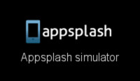
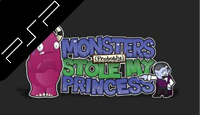
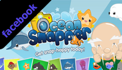
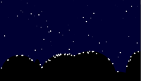
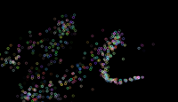

Please use the filter below to filter what types of projects you want to see, by default all catergoeries are shown
- Waitrose iBeacon
- Pocketsales
- miPic
- Delivered
- Cinexplorer
- Appsplash
- Mori
- Cafe Rouge Express
- Who's That Flying?!
- MPSMP
- Amateur Surgeon 2
- Ocean Snapper
- Vancouver Winter Olympics
- Project SOAP
- Racing Demo
- Shooter Demo
- Space Horde Demo
- Java 3D
- Little Sniper Acadamy
- Pairs
- Air Raid Demo
- Bewildering Train Superstar
- Prison Demo
- Desk Fighter
- Jack Be Nimble
- Art Particles
- Snow Particles
- Rain Particles
- Rotation Particles
- 3D SpaceScroller
- Space Particles
- Bouncing Particle
- SpiderWeb Particles
- Burning Ship Particles
- Smoke Particles
- Matrix Particles
- Random Spawning Particles
- Mouse Particle Trail
- Firework Particles
{kind=link}
{kind=link}
{kind=link}
{kind=link}
{kind=link}
{kind=link}
{kind=link}
{kind=link}
{kind=link}
{kind=link}
{kind=link}
{kind=link}
{kind=link}
{kind=link}
{kind=link}
{kind=link}
{kind=link}
{kind=link}
{kind=link}
{kind=link}
{kind=link}
{kind=link}
{kind=link}
{kind=link}
{kind=link}